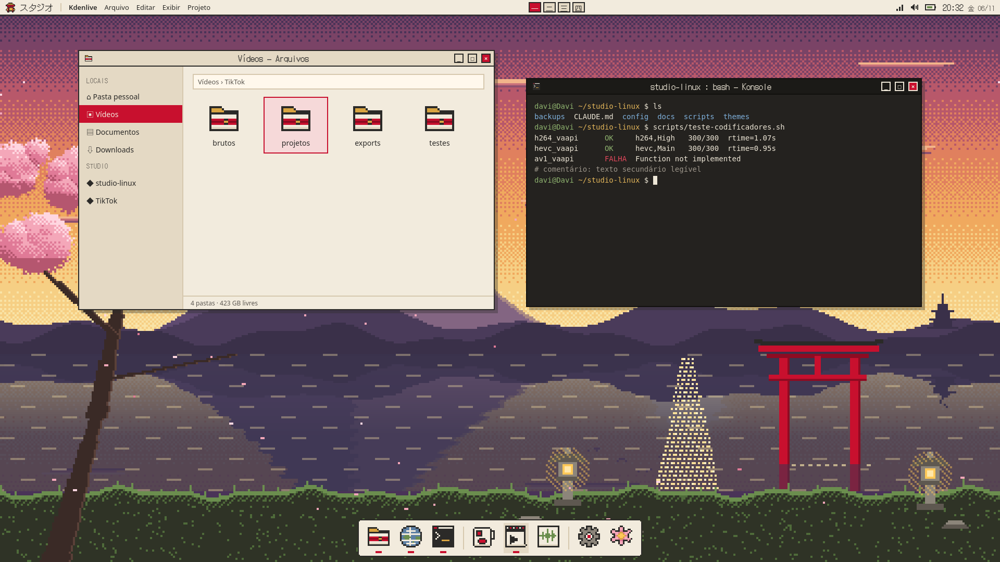

Washi · 和紙 — proposta visual
Japão tradicional · entardecer dourado · barra fina no topo + dock · DotGothic16 decorativa · variante Sumi para produção
Isto é uma prévia (conceito). A imagem abaixo é uma maquete HTML renderizada no Firefox, não o Plasma real.
O papel de parede e os ícones já são os arquivos finais gerados pelos scripts do projeto. Os demais elementos mostram a intenção,
e a tabela "O que será implementado" diz o que o KDE consegue reproduzir de forma nativa, o que fica aproximado e o que fica só como conceito.

Paleta
Washi (sistema)
washi
#F2EBDD · fundo
#F2EBDD · fundo
washi 2
#E4D9C4 · superfícies
#E4D9C4 · superfícies
sumi
#2B2A28 · texto 12,1:1
#2B2A28 · texto 12,1:1
torii
#C8102E · seleção 5,0:1
#C8102E · seleção 5,0:1
musgo
#4F6B3A · links 5,1:1
#4F6B3A · links 5,1:1
ouro
#D9A441 · só decoração
#D9A441 · só decoração
Sumi (OBS, Kdenlive, Audacity, Konsole)
sumi
#24221F · fundo
#24221F · fundo
sumi 2
#302D29 · superfícies
#302D29 · superfícies
washi
#EDE6D6 · texto 12,8:1
#EDE6D6 · texto 12,8:1
torii
#B3263B · seleção 5,2:1
#B3263B · seleção 5,2:1
musgo
#8FB36F · foco 6,7:1
#8FB36F · foco 6,7:1
ouro
#E3B65A · avisos 8,4:1
#E3B65A · avisos 8,4:1
Contraste calculado pelo método WCAG (arquivo preview/contraste.txt): texto principal ≥ 12:1 (AAA) nas duas variantes; seleção e links ≥ 4,5:1 (AA).
O ouro claro não passa como texto sobre washi e por isso fica só em ícones e decoração.
Tipografia
| Uso | Fonte | Tamanho |
|---|---|---|
| Relógio, rótulo スタジオ, títulos de janela, nomes das áreas de trabalho (一 二 三 四) | DotGothic16 — 20:32 金曜日 | 16 px (nativo da fonte; fica nítido) |
| Interface, menus, Dolphin, diálogos, textos longos | Noto Sans + Noto Sans CJK JP (já instaladas) | 10 pt (padrão atual) |
| Terminal, código, legendas técnicas | DejaVu Sans Mono (atual) | 10–11 pt |
O que será implementado
nativo recurso do próprio KDE e Plasma 6.3 aproximado fica parecido com a maquete, sem ser idêntico só conceito não será feito, ou só com custo alto depois fica para outra etapa
| Elemento | Como | Status |
|---|---|---|
| Papel de parede | PNG 1920×1080 gerado por tools/gerar-papel-de-parede.py, estático | nativo |
| Cores do sistema | Esquemas de cores KDE Washi.colors e Sumi.colors; o estilo Plasma Breeze passa a seguir o esquema (painéis na cor washi) | nativo |
| Barra superior de 30 px | Painel Plasma no topo: lançador (ícone torii) + rótulo スタジオ, menu global, áreas de trabalho, bandeja e relógio em DotGothic16 | nativo |
| Menu global (Arquivo, Editar…) na barra | Widget "Menu global": funciona nos apps KDE/Qt (Kdenlive, Dolphin, Konsole); Firefox e alguns apps mantêm o menu na própria janela | aproximado |
| Áreas de trabalho 一 二 三 四 | Widget de áreas de trabalho mostrando o nome de cada uma | nativo |
| Dock inferior centralizada | 2º painel, flutuante, centralizado e do tamanho do conteúdo, com lançadores fixos e indicador de app aberto | nativo |
| Cantos "em degrau" e sombra dura de 1 pixel na dock e na barra | Exige um estilo Plasma próprio (SVGs de fundo dos painéis). Planejado para depois que o resto estiver validado | aproximado |
| Decoração de janelas (botões quadrados, × vermelho) | Tema Aurorae próprio em SVG (motor nativo do KWin). Alternativa mais leve: Breeze com as cores Washi | nativo |
| Sombra de janela dura e deslocada | O KWin desenha sombras suaves; dá para encurtar e escurecer, mas não para deixar idêntica à maquete | aproximado |
| Títulos de janela em DotGothic16 | Fonte do título de janela nas configurações de fontes | nativo |
| Ícones pixel | Tema de ícones washi-pixel, herdado do Breeze: ícones próprios para os apps da dock, pastas e lançador; o resto continua Breeze | aproximado |
| Todos os ícones do sistema em pixel art | São milhares de ícones; não é realista | só conceito |
| Ícones da bandeja em pixel | Continuam os simbólicos do Breeze (já são monocromáticos e combinam) | só conceito |
| Cursor pixel | Tema Xcursor próprio (seta, mão, texto, espera), compilado com xcursorgen (pacote x11-apps, a confirmar) | nativo |
| Terminal Sumi | Perfil e esquema de cores do Konsole | nativo |
| Kdenlive em Sumi | Menu Configurações → Tema de cores do próprio Kdenlive | nativo |
| Audacity | Tema "Escuro" embutido. Cores Washi exatas exigiriam editar o tema interno | aproximado |
| OBS em Sumi | Tema .obt próprio, aplicado só se você autorizar, para preservar a configuração do OBS | aproximado |
| Títulos da barra lateral do Dolphin em fonte pixel | O Dolphin usa a fonte do sistema; mantemos Noto Sans por legibilidade | só conceito |
| Login (SDDM) e bloqueio de tela | Depois de validar a sessão; o SDDM exige sudo | depois |
Desempenho
- Nada animado: papel de parede estático, sem efeitos contínuos, sem desfoque (blur) atrás dos painéis.
- Animações do KWin mais curtas (fator 0,5) e efeitos pesados (cubo, janelas gelatinosas) desligados.
- O tema não altera rede, áudio, drivers nem a configuração do OBS.
Etapas de aplicação
- V1 · Desktop: instalar
fonts-dotgothic16(sudo, feito por você), aplicar papel de parede, esquema Washi, barra superior + dock e efeitos leves. Captura de tela e validação. - V2 · Janelas: decoração Aurorae "Washi Pixel" e fonte dos títulos.
- V3 · Ícones e cursor.
- V4 · Produção: Konsole, Kdenlive e Audacity em Sumi; tema do OBS só com sua autorização.
- V5 · Login e bloqueio, depois da sessão validada.
Cada etapa tem o seu script de aplicação e o seu script de restauração em ~/ukiyo/themes/washi/, e o backup completo do estado original já está em
backups/2026-11-06-etapa3-visual/.